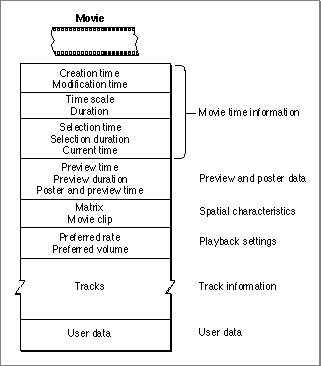

Movie Characteristics
A QuickTime movie is represented as a private data structure. Your application never works with individual fields in that data structure. Rather, the Movie Toolbox provides functions that allow you to work with a movie's characteristics. Figure 2-9 shows some of the characteristics of a QuickTime movie.Figure 2-9 Movie characteristics

Every QuickTime movie has some state information, including a creation time and a modification time. These times are expressed in standard Macintosh time format, representing the number of seconds since midnight, January 1, 1904. The creation time indicates when the movie was created. The modification time indicates when the movie was last modified and saved.
Each movie has its own time coordinate system and time scale. Any time values that relate to the movie must be defined using this time scale and must be between 0 and the movie's duration.
A movie's preview is defined by its starting time and duration. Both of these time values are expressed in terms of the movie's time scale. A movie's poster is defined by its time value, which is in terms of the movie's time scale. You assign tracks to the movie preview and the movie poster by calling the Movie Toolbox functions that are described later in this chapter.
Your current position in a movie is defined by the movie's current time. If the movie is currently playing, this time value is changing. When you save a movie in a movie file, the Movie Toolbox updates the movie's current time to reflect its current position. When you load a movie from a movie file, the Movie Toolbox sets the movie's current time to the value found in the movie file.
The Movie Toolbox provides high-level editing functions that work with a movie's current selection. The current selection defines a segment of the movie by specifying a start time, referred to as the selection time, and a duration, called the selection duration. These time values are expressed using the movie's time scale.
For each movie currently in use, the Movie Toolbox maintains an active movie segment. The active movie segment is the part of the movie that your application is interested in playing. By default, the active movie segment is set to be the entire movie. You may wish to change this to be some segment of the movie--for example, if you wish to play a user's selection repeatedly. By setting the active movie segment, you guarantee that the Movie Toolbox uses no samples from outside of that range while playing the movie. See "Enhancing Movie Playback Performance," which begins on page 2-119, for details on functions that work with the active segment.
A movie's display characteristics are specified by a number of elements. The movie has a movie clipping region and a 3-by-3 transformation matrix. The Movie Toolbox uses these elements to determine the spatial characteristics of the movie. See "Spatial Properties" beginning on page 2-15 for a complete description of these elements and how they are used by the Movie Toolbox.
When you save a movie, you can establish preferred settings for playback rate and volume. The preferred playback rate is called the preferred rate. The preferred
playback volume is called the preferred volume. These settings represent the most natural values for these movie characteristics. When the Movie Toolbox loads a movie from a movie file, it sets the movie's volume to this preferred value. When you start playing the movie, the Movie Toolbox uses the preferred rate. You can then use Movie Toolbox functions to change the rate and volume during playback.Movies contain each of their tracks. See the next section for more information about tracks and their characteristics.
The Movie Toolbox allows your application to store its own data along with a movie. You define the format and content of these data objects. This application-specific data is called user data. You can use these data objects to store both text and binary data. For example, you can use text user data items to store a movie's copyright and credit information. The Movie Toolbox provides functions that allow you to set and retrieve a movie's user data. This data is saved with the movie when you save the movie.